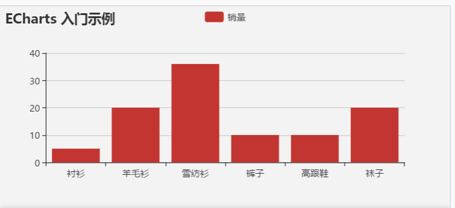

分享人：庄引
目录
1.背景介绍
2.知识剖析
3.常见问题
4.解决方案
5.编码实战
6.扩展思考
7.参考文献
8.更多讨论
ECharts来自百度EFE数据可视化团队，是一个纯 Javascript 的图表库， 可以流畅的运行在 PC 和移动设备上， 兼容当前绝大部分浏览器（IE8/9/10/11，Chrome，Firefox，Safari等），底层依赖轻量级的 Canvas 类库 ZRender，提供直观，生动，可交互，可高度个性化定制的数据可视化图表。
ECharts 3 中更是加入了更多丰富的交互功能以及更多的可视化效果，并且对移动端做了深度的优化。
数据可视化主要旨在借助于图形化手段，清晰有效地传达与沟通信息。
数据可视化是关于数据视觉表现形式的研究。其中，这种数据的视觉表现形式被定义为一种以某种概要形式抽提出来的信息，包括相应信息单位的各种属性和变量。 利用图形、图像处理、计算机视觉以及用户界面，通过表达、建模以及对立体、表面、属性以及动画的显示，对数据加以可视化解释。
数据可视化是通过处理数据来反映一些问题和规律，而不是将结果夸张化。 数据可视化已经不满足于信息的呈现，而更应该落实到有据可循的分析和决策制定中去。
ECharts 提供了常规的折线图，柱状图，散点图，饼图，K线图，用于统计的盒形图，用于地理数据可视化的地图，热力图，线图， 用于关系数据可视化的关系图，treemap，多维数据可视化的平行坐标，还有用于 BI 的漏斗图，仪表盘，并且支持图与图之间的混搭。 你可以在下载界面下载包含所有图表的构建文件，如果只是需要其中一两个图表，又嫌包含所有图表的构建文件太大， 也可以在在线构建中选择需要的图表类型后自定义构建。
你可以在下载界面下载包含所有图表的构建文件，如果只是需要其中一两个图表， 又嫌包含所有图表的构建文件太大，也可以在在线构建中选择需要的图表类型后自定义构建。
ECharts 3 开始独立出了“坐标系”的概念，支持了直角坐标系（catesian，同 grid）、极坐标系（polar）、 地理坐标系（geo）。图表可以跨坐标系存在，例如折、柱、散点等图可以放在直角坐标系上，也可以放在极坐标系上， 甚至可以放在地理坐标系中。
流量珍贵的移动端需要图表库的体积尽量小。ECharts 和 ZRender 代码的重构，带来了核心部分体积的减小。ECharts 组件众多，并且后面会持续增加，我们提供了更细粒度的按需打包能力。最小体积缩小为 ECharts 2 的 40%。 移动端交互也做了优化，例如移动端小屏上适于用手指在坐标系中进行缩放、平移。 PC 端也可以用鼠标在图中进行缩放（用鼠标滚轮）、平移，如下图：
交互是从数据中发掘信息的重要手段。“总览为先，缩放过滤按需查看细节”是数据可视化交互的基本需求。 ECharts 一直在交互的路上前进，我们提供了 legend visualMap dataZoom tooltip等组件以及图表附带的漫游，选取等操作提供了数据筛取、视图缩放、展示细节等能力。 ECharts 3 中，对这些组件进行了广泛增强，例如支持在数据的各种坐标轴、维度进行数据过滤、缩放，以及在更多的图中采用这些组件。比如下面这个例子：
借助 Canvas 的能力，ECharts 在散点图中能够轻松展现上万甚至上十万的数据。下面的微博签到图中就展现了 100k+ 的签到数据。
从官网下载界面选择你需要的版本下载，根据开发者功能和体积上的需求，我们提供了不同打包的下载，如果你在体积上没有要求，可以直接下载完整版本。开发环境建议下载源代码版本，包含了常见的错误提示和警告。
在 ECharts 的 GitHub 上下载最新的 release
版本，解压出来的文件夹里的 dist 目录里可以找到最新版本的 echarts 库。
通过 npm 获取 echarts，npm install echarts --save，详见“在 webpack 中使用 echarts”
ECharts 3 开始不再强制使用 AMD 的方式按需引入，代码里也不再内置 AMD 加载器。因此引入方式简单了很多，只需要像普通的 JavaScript 库一样用 script 标签引入。
在绘图前我们需要为 ECharts 准备一个具备高宽的 DOM 容器。
然后就可以通过 echarts.init 方法初始化一个 echarts 实例并通过 setOption 方法生成一个简单的柱状图，下面是完整代码。
ECharts
这样你的第一个图表就诞生了！
 demo入门示例中的数据是在初始化后setOption中直接填入的， 但是很多时候可能数据需要异步加载后再填入。ECharts 中实现异步数据的更新非常简单，在图表初始化后不管任何时候只要通过 jQuery 等工具异步获取数据后通过 setOption 填入数据和配置项就行。
var myChart = echarts.init(document.getElementById('main'));
$.get('data.json').done(function (data) {
myChart.setOption({
title: {
text: '异步数据加载示例'
},
tooltip: {},
legend: {
data:['销量']
},
xAxis: {
data: ["衬衫","羊毛衫","雪纺衫","裤子","高跟鞋","袜子"]
},
yAxis: {},
series: [{
name: '销量',
type: 'bar',
data: [5, 20, 36, 10, 10, 20]
}]
});
});
var myChart = echarts.init(document.getElementById('main'));
// 显示标题，图例和空的坐标轴
myChart.setOption({
title: {
text: '异步数据加载示例'
},
tooltip: {},
legend: {
data:['销量']
},
xAxis: {
data: []
},
yAxis: {},
series: [{
name: '销量',
type: 'bar',
data: []
}]
});
// 异步加载数据
$.get('data.json').done(function (data) {
// 填入数据
myChart.setOption({
xAxis: {
data: data.categories
},
series: [{
// 根据名字对应到相应的系列
name: '销量',
data: data.data
}]
});
});
感谢大家观看
BY : 龚家豪|胡嘉杰| 庄引